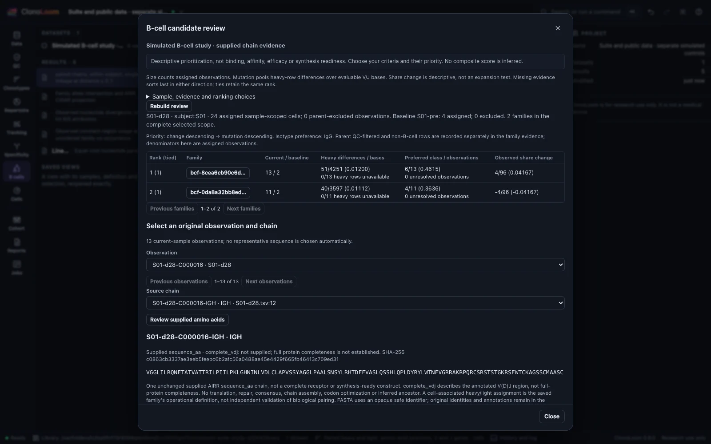
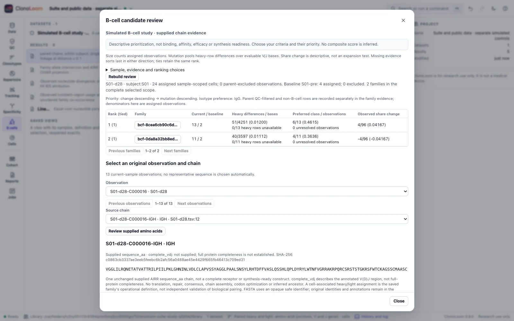

Suite and public-data study
Keep scientific units, missing evidence and permissions explicit across the 0.9.0 workflows.
ClonoLoom 0.9.0 brings exact AIRR metadata, public-repository evidence and reviewed interchange into the workbench. This worked guide uses separate declared artificial studies. Their subjects and denominators are not pooled. No live repository response or external sequence search is presented as simulated biology.
Start with the original evidence
Open rearrangements alongside their original Repertoire JSON or supported YAML. Inspect exact record IDs, match basis, original text and source hash. Large integers, precise numbers, explicit null, false and zero remain distinct. Imported Clone, Cell and Receptor objects retain source assertions and unresolved links; they do not replace the active clonotype definition or prove pairing.
The MiAIRR checklist describes reporting evidence under the pinned schema, not scientific validity, consent or ontology conformance. Unsupported declarations remain not assessed. Use native-report inspection for supported TRUST4, VDJtools and detailed Cell Ranger JSON; layout recognition is not pipeline validation.
Define the public comparison universe
In Data → Public repositories, review the endpoint and exact filters before sending a metadata query. Download one explicitly selected repertoire/processing run only after permission, citation and size-budget review. Keep original pages and the request/hash/completion manifest. A completed page sequence does not establish a complete biological cohort.
For Public overlap, select the local dataset, one sample, one locus and the captured folders. Inspect the dataset selector in multi-dataset projects. Accept the separate exact-junction presence contract. This calculation works offline and sends no query sequence. Missing subjects stay outside the evaluable denominator; empty-set comparisons remain unavailable. The artificial TRB control retains 83 rows, 80 eligible observations and 40 distinct keys, with four captured controls containing missing/unassigned subjects and an empty eligible set. Counts and Jaccard fractions are checked independently. They do not estimate population prevalence or antigen specificity.
Review B-cell evidence without a binding score


Open the six candidate TSVs with their metadata. Build subject-scoped paired families at the demonstration threshold 0.1, then the supplied artificial germline reference, SHM, isotypes and parsimony lineages. Keep methods, source rows and hashes. The threshold is not a recommendation for biological samples.
For one bounded family/locus panel, explicitly fit JC69 likelihood. Inspect branch units, boundaries, near ties and conditional ancestral probabilities. The equal-rate model does not capture SHM context; reference orientation does not establish roots, dates, switching or migration. Numerical stationarity does not prove a global continuous optimum or biological adequacy.
In candidate review, choose S01-d28 versus S01-pre, matching SHM/isotype parents, IgG, and descending share change then divergence. The families have 13 and 11 current cells, two baseline cells each, and share changes of +4/96 and −4/96. This is descriptive sampling evidence, not an expansion test or affinity predictor. Select one observation and chain explicitly. Save unchanged supplied amino acids with both evidence companions after review; a missing amino-acid annotation stays missing, and a one-chain FASTA is not a synthesis-ready receptor.
Keep interchange boundaries visible
Excel and Prism exports support their documented saved cohort/batch/motif kinds. They do not accept candidate or public-overlap reviews. Use the cohort examples for subject-level tables; source rows are not independent subjects. Keep exact JSON and mappings beside spreadsheet/Prism files, whose re-saving or import can change precision and missingness.
Proteoscope requires destination review and separate local/public/provider permissions. Opening from candidates sends nothing. CytoWeave links require an explicit acquisition-to-sample mapping and retain missing/conflicting identities and compensation/gating context. Neither sequence similarity nor an exact identifier join establishes biological validity.
Preserve and verify
The 0.9.0 fixture retains original source, project, parent and review bytes alongside a separate portable project. Source-regression tests check dataset identities and scientific outputs. Independent audits check exact candidate ratios, source-chain FASTA and conditional JC69 calculations. Original evidence is not de-identified.
Saved-byte integrity, source recomputation, conditional review and certificate replay are distinct. Existing certificates still cover five supported cohort/batch/motif kinds; this release adds no ADC, candidate, likelihood or sibling-transfer replay. Keep those standalone records explicitly alongside the project. The complete guide includes sources, reproducible commands, permissions and limits.